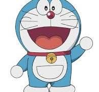
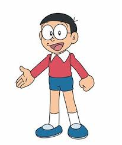

Information:Doraemon is a Japanese manga and anime franchise about a robotic cat from the future who travels back in time to help a boy named Nobita Nobi. Created by Fujiko F. Fujio, the series first appeared in 1969 and became an international success through its multiple anime adaptations and films. Doraemon uses a variety of futuristic gadgets from his fourth-dimensional pocket to help Nobita with his everyday problems, and their adventures are a central part of the story. The manga spawned a media franchise. It was adapted into three different anime TV series in 1973, 1979, and 2005. Additionally, Shin-Ei Animation has produced over forty animated films, including two 3D computer-animated films, all of which are distributed by Toho. Various types of merchandise and media have been developed, including soundtrack albums, video games, and musicals. The manga series was licensed for an English language release in North America, via Amazon Kindle, through a collaboration of Fujiko F. Fujio Pro with Voyager Japan and AltJapan Co., Ltd. The anime series was licensed by Disney for an English-language release in North America in 2014, and LUK International in Europe, the Middle East and Africa. Doraemon was well-received by critics and became a commercial success in many Asian countries. It won numerous awards, including the Japan Cartoonists Association Award in 1973 and 1994, the Shogakukan Manga Award for children's manga in 1982, and the Tezuka Osamu Cultural Prize in 1997. As of 2024, it has sold over 300 million copies worldwide, making it one of the best-selling manga series of all time. The character of Doraemon is considered a Japanese cultural icon, and was appointed as the first "anime ambassador" in 2008 by the country's Foreign Ministry.

Information:Nobita's characterization depicts him as a lazy underachiever, including but not limited to a lack of physical ability, predisposition to procrastination, reluctance to engage in critical thinking and exhibiting perverted behavior. He dislikes books (excluding manga) and lacks a basic grasp of knowledge expected for his age, such as being unable to understand concepts such as the definition of an eclipse. A running gag involves his disposition to frequent and efficient napping, infamous in the community to the point he is primarily known for his napping in nearby cities. Many chapters start with Nobita in tears, begging Doraemon to lend him a (faulty or outdated) gadget. His usual motives are to get revenge on Gian and Suneo's harassment, show off to Shizuka for her affections, act out his imagination or simply solve extremely trivial problems. However, he is very untrustworthy when handling gadgets, frequently abusing their power to the point he causes suffering to himself or others, in part due to his poor decisions, the gadgets' own faults or interference by other characters. He envies his classmate Hidetoshi Dekisugi, a straight-A student admired by all of the girls in his class, including Shizuka, but is otherwise on good terms with him. He is friends with Shizuka, Suneo and Gian, though the latter two harass and bully him for his ineptitude or poor decisions.[2]